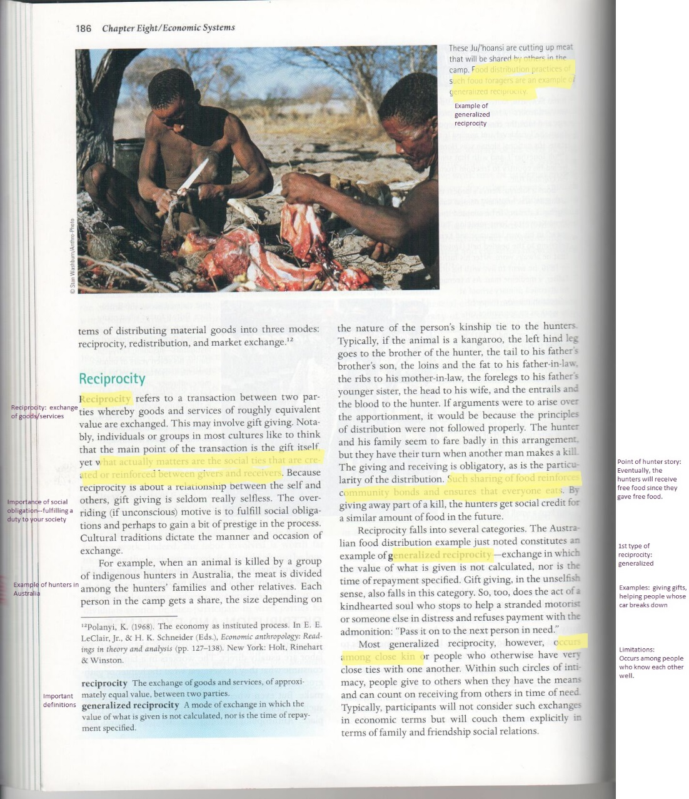

•Click hereto watch a
short video explaining the annotation.
•Once you
have found the information the author thinks is
important, you should have a clear understanding of the material.

Source:Haviland, William et. al.Cultural Anthropology:The Human Challenge.12th Ed.Belmont, CA:Wadsworth Thompson Learning, 2008.Print.